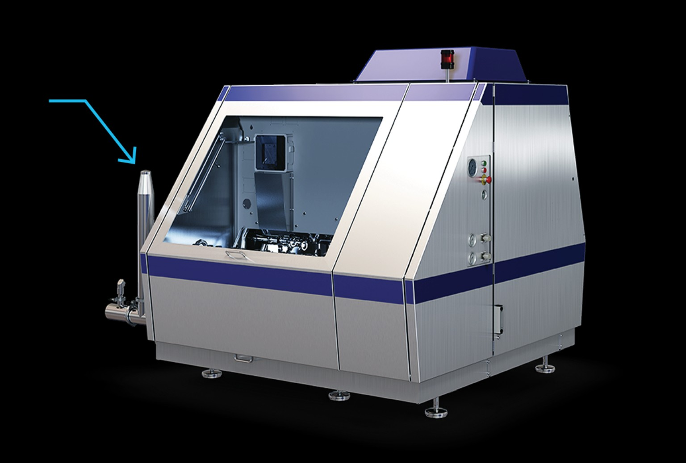
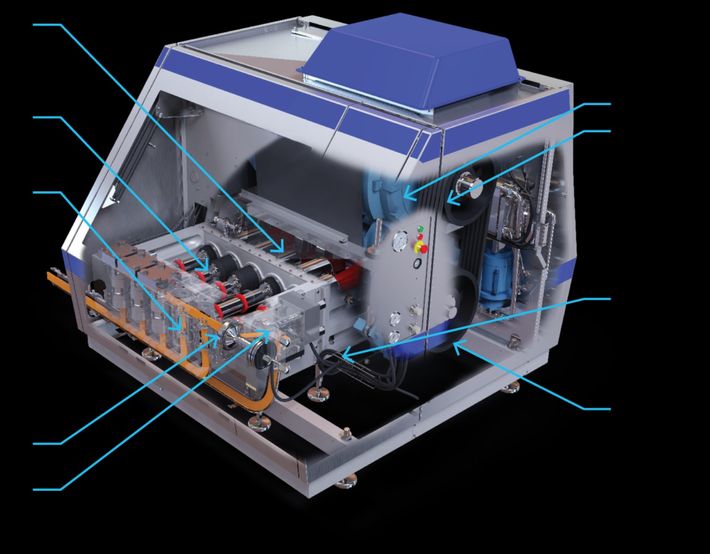

Homogenizer
A high-pressure dairy machine that forces milk through a precision homogenizing device to disrupt fat globules, reduce creaming and improve the physical stability, appearance and mouthfeel of dairy products.

What is homogenization?
The core objective is to stabilize the milk fat emulsion against gravity separation.
Milk is an oil-in-water emulsion. Homogenization mechanically disrupts the original fat globules by forcing milk through a small passage at high velocity. The Tetra Pak Dairy Processing Handbook describes the resulting fat globules as approximately 1 µm in diameter and notes a roughly four- to six-fold increase in fat/plasma interfacial surface area. Proteins from the plasma phase, especially casein, become associated with the newly created fat surface.
Why does it prevent cream separation?
Smaller fat globules rise much more slowly. Reducing particle size therefore reduces the creaming rate and keeps the fat phase dispersed.
Construction & major components
The homogenizer is a large high-pressure pump with a homogenizing device.

Crankcase
Contains the crank mechanism and connecting-rod transmission. It converts rotary motion from the drive into reciprocating piston motion.
Pistons
The reciprocating pistons pressurise the product. High-pressure machines commonly use three to five pistons in the pump block.
Pump block
The high-pressure pump block houses the piston cylinders and provides the pressure-generating section of the homogenizer.
Homogenization device — first stage
The first stage is where the actual homogenization takes place. The pressure drop across this stage controls the main homogenizing effect.
Homogenization device — second stage
The second stage provides controlled back-pressure, suppresses excessive cavitation and breaks up clusters formed immediately after the first stage.
Main drive motor
A powerful electric motor supplies the rotary power required to drive the piston pump.
V-belt transmission
Belts and pulleys transmit motor power to the gearbox and drive system.
Hydraulic pressure setting system
Hydraulic oil pressure acts on the hydraulic piston and balances the homogenization pressure on the forcer. The first and second stages can be individually pressure-controlled.
Gear box
The gearbox transfers the drive from the belt-and-pulley system to the crankcase and piston-drive mechanism.
Construction analysed from the inside out
The numbered machine view and the valve cutaway can be read together: the drive system creates piston motion, the pump block converts that motion into pressure, and the homogenizing devices convert pressure into controlled high-velocity flow.
Numbered machine construction
The machine is divided functionally into a drive section, a pressure-generating section and a homogenizing section. The numbered labels show how these systems are physically integrated into one compact high-pressure unit.

Detailed homogenizing device
The cutaway shows the critical pressure-reduction zone. Unhomogenised product enters the valve, passes through the very narrow gap between the forcer and seat, and leaves as homogenised product. The hydraulic piston controls the force acting on the forcer.
Functional chain of the machine
Detailed function of all 9 numbered parts
Crankcase
The crankcase contains the crank mechanism and connecting-rod arrangement. It receives rotary drive and converts it into the reciprocating movement required by the pistons. It also forms the mechanical foundation between the gearbox and pump block.
Pistons
The pistons are the pressure-generating members. Their reciprocating movement draws product into the pump chamber during the suction portion of the cycle and forces it forward during the compression portion.
Pump block
The pump block contains the high-pressure pumping chambers, piston passages and associated product valves. It is the section where the product pressure is raised before the milk reaches the homogenizing device.
First-stage homogenization device
The first stage provides the principal pressure drop and the main homogenizing action. The controlled gap creates the very high liquid velocity responsible for breaking the original fat globules into much smaller droplets.
Second-stage homogenization device
The second stage is operated at a lower pressure than the first stage. Its main functions are to provide controlled back-pressure and to reduce clusters that may form after the first stage.
Main drive motor
The electric motor supplies the mechanical power required by the high-pressure pump. The motor's rotary output is transmitted to the mechanical drive train rather than directly to the pistons.
V-belt transmission
V-belts and pulleys transfer motor power to the drive system. The transmission allows the machine to obtain the required drive speed and torque while keeping the motor and pump mechanically arranged within the machine frame.
Hydraulic pressure setting system
Hydraulic pressure acts on the hydraulic piston and therefore controls the force applied to the homogenizing forcer. This is the pressure-setting mechanism that establishes the operating condition at the homogenizing device.
Gear box
The gearbox transfers and adapts the mechanical drive between the belt transmission and the crank mechanism. It is therefore part of the power transmission chain that ultimately produces piston reciprocation.
Detailed analysis of the homogenizing device
The homogenizing device is the most critical process zone of the machine. The diagram shows the hydraulic piston, forcer, seat, incoming unhomogenised product and outgoing homogenised product. The narrow opening between the forcer and seat is the controlled homogenizing gap.
Hydraulic piston
Hydraulic force is applied to the forcer through the hydraulic piston. Changing hydraulic pressure changes the force acting on the homogenizing device and therefore the pressure condition at the valve.
Forcer
The forcer is the moving/loaded member that forms the controlled passage with the seat. Its position relative to the seat determines the effective restriction through which the product passes.
Seat
The seat forms the opposing precision surface. The geometry of the seat and forcer establishes the narrow annular flow passage and controls the acceleration of the product.
Homogenizing gap
The diagram identifies an approximate 0.1 mm gap. Because the passage is extremely small, a high-pressure product stream is converted into a very high-velocity jet as it passes through it.
What physically happens to the milk?
Before the gap
The product has been pressurised by the positive-displacement piston pump. The pressure energy is stored in the pressurised liquid immediately upstream of the homogenizing device.
Inside the gap
The available flow area becomes extremely small. The liquid accelerates sharply and reaches approximately 100–400 m/s in the narrow gap described for the homogenizing zone.
At the outlet
After the restriction, pressure recovers while the intense flow field has already acted on the fat globules. The homogenized product then continues to the second stage when a two-stage machine is used.
Time scale
The actual homogenizing action occurs extremely rapidly, in approximately 10–15 microseconds.
Why the fat globules become smaller
Turbulence theory
Milk is a low-viscosity oil-in-water dispersion. When the liquid emerges through the narrow homogenizing passage, the high-velocity jet contains turbulent eddies. These intense local flow conditions interact with the fat droplets, deforming and breaking them into smaller droplets.
Cavitation
Acceleration through the restriction can cause a strong local pressure reduction. Vapour cavities may form and subsequently collapse as pressure recovers. The resulting local effects contribute to the extreme conditions within the homogenizing zone. In two-stage operation, the second-stage back-pressure helps control the conditions after the first stage.
Pressure relationship between first and second stage
| Stage | Main function | Pressure role | Effect on product |
|---|---|---|---|
| First stage | Principal homogenization | Receives the major pressure drop | Breaks the original fat globules and creates a much finer dispersion |
| Second stage | Back-pressure / de-clustering | Operates at a much lower pressure than stage 1 | Helps reduce clusters and controls the condition of the first-stage outlet |
Parameters that control homogenization
Homogenization pressure
Increasing homogenization pressure generally increases the intensity of particle-size reduction. The operating pressure must nevertheless be selected for the product, required stability and machine design.
Temperature
The handbook material gives a broad homogenization temperature range of approximately 55–80°C. Temperature affects viscosity and therefore the flow behaviour through the homogenizing device.
Milk composition
Freshly created fat surface must be covered by material from the plasma phase. Casein is especially important. The supplied material gives approximately 0.2 g casein per g fat as a useful availability figure.
Fat concentration
In partial-stream operation, the cream stream must not be concentrated beyond the level where insufficient membrane material encourages clustering. The supplied material gives approximately 18% maximum cream fat.
Why does the product temperature rise?
The pressure energy supplied by the piston pump is converted into kinetic energy as the liquid accelerates through the homogenizing restriction. After the restriction, part of the energy is recovered as pressure and part appears as heat.
Thus, a larger pressure drop across the homogenizing device is accompanied by a greater temperature increase. This is important when designing the thermal sequence around the homogenizer.
What should be monitored?
Pressure stability
Unstable pressure can indicate problems in product supply, pump operation, valves, drive behaviour or pressure-control settings.
Valve condition
The precision-ground homogenizing components are critical. Wear can alter the effective gap and consequently change the resulting particle-size distribution.
Seal and cooling condition
The high-pressure pump uses piston sealing arrangements; the supplied machine description notes cooling water may be provided between seals.
Product temperature
Temperature should be considered together with pressure because pressure-energy dissipation produces a temperature rise through the homogenizing zone.
Homogenizer in one sequence
Motor → V-belt transmission → gearbox → crankcase → pistons → pump block → first-stage homogenizing device → second-stage homogenizing device → homogenized milk.
The mechanical drive produces reciprocating piston motion; the pistons generate high product pressure; the first homogenizing stage creates the principal fat-globule disruption; and the second stage provides controlled back-pressure and de-clustering. The result is a more finely dispersed milk-fat phase with reduced tendency for cream separation.
How the homogenizer works — step by step
What breaks the fat globules?
Turbulence: for milk and other low-viscosity oil-in-water dispersions, the turbulence theory explains the break-up. The high-velocity jet forms turbulent eddies that interact with, stretch and break the fat droplets.
Cavitation control: pressure can fall enough for vapour bubbles to form. In a two-stage homogenizer, controlled second-stage back-pressure helps suppress excessive cavitation and provides better conditions for homogenization.
Homogenizing valve / head
This is where pressure energy is converted into extremely high liquid velocity.
Seat + forcer + impact ring
Milk enters the space between the seat and forcer. The gap is approximately 0.1 mm. The handbook reports liquid velocity of approximately 100–400 m/s in the narrow annular gap, with homogenization occurring in roughly 10–15 microseconds.
The seat has a 5° angle that helps controlled acceleration and reduces wear.
Pressure → velocity → disruption
The piston pump raises milk from roughly 3 bar inlet pressure to a homogenization pressure of about 100–250 bar, depending on product.
Operating conditions
| Parameter | Value / range | Importance |
|---|---|---|
| Homogenization temperature | 55–80°C | Higher temperature lowers milk viscosity and improves dispersion. |
| Homogenization pressure | 10–25 MPa (100–250 bar) | Process intensity depends on product and required homogenization effect. |
| Valve gap | ≈ 0.1 mm | Narrow passage produces the high velocity required for disruption. |
| Gap velocity | ≈ 100–400 m/s | Creates the intense flow conditions in the homogenizing zone. |
| Casein availability | ≈ 0.2 g casein / g fat | Helps provide sufficient membrane material for newly created fat surfaces. |
| Partial-stream cream fat | Maximum about 18% | Higher concentration can promote clustering when membrane material is insufficient. |
Why use two-stage homogenization?
Single-stage
- One homogenizing device.
- Can be used where some cluster formation and higher viscosity are desired.
- Pressure is applied through the single homogenizing stage.
Two-stage
- Two devices are connected in series.
- First stage performs the principal homogenization.
- Second stage supplies controlled back-pressure and breaks up clusters.
- Modern devices give best results with P2 ≈ 3 MPa (30 bar).
Homogenizer visuals
Four visual views explain the purpose, machine construction and homogenizing zone.

1. Fat globule disruption
Homogenization reduces the average fat-globule size from about 3.5 µm to below 1 µm. The increased interfacial area is then covered by proteins from the plasma phase, primarily casein.
2. Complete machine
The homogenizer combines a positive-displacement piston pump, drive system, pressure-control system and one or two homogenizing stages.
3. Homogenizing device
Milk enters the narrow space between the seat and forcer. The controlled gap accelerates the liquid to very high velocity and creates the conditions required for fat-globule disruption.

4. Internal machine view
The internal view connects the external machine with the numbered components above: drive motor and transmission, crank mechanism, pistons, pump block, hydraulic pressure setting system and homogenization devices.
How the homogenizing zone works
Pressure: the piston pump raises milk from about 0.3 MPa (3 bar) at the inlet to the required homogenization pressure, often 10–25 MPa (100–250 bar).
Acceleration: milk passes through an approximately 0.1 mm gap between the seat and forcer, reaching roughly 100–400 m/s.
Turbulence: for low-viscosity oil-in-water dispersions such as milk, the turbulence theory explains the break-up. The high-velocity jet forms turbulent eddies that interact with and break the fat droplets.
Time: homogenization takes only about 10–15 microseconds.
Where is the homogenizer installed?
Pasteurized market milk
In general, the homogenizer is placed upstream of the final heating section, typically after the first regenerative section of the pasteurizer.
UHT processing
For indirect UHT systems the homogenizer is generally upstream; for direct UHT systems it is downstream on the aseptic side after UHT treatment. Aseptic machines use special seals, packings and aseptic components.
Homogenization configurations
Full-stream homogenization
All standardized milk passes through the homogenizer. This is the common arrangement for market milk and milk intended for cultured products.
Partial-stream homogenization
The main skimmilk stream bypasses the homogenizer; only cream plus a small proportion of skim milk is homogenized and then remixed. Total power consumption can be reduced by approximately 70%.
Advantages and technological limitations
✓ Advantages
- Smaller fat globules and reduced cream-line formation.
- Whiter, more appetizing colour.
- Reduced sensitivity to fat oxidation.
- More full-bodied flavour and improved mouthfeel.
- Better stability of cultured milk products.
⚠ Limitations
- Homogenized milk cannot be efficiently separated back into cream and skim milk.
- Increased sensitivity to light can contribute to sunlight flavour.
- Reduced heat stability can occur under conditions favouring fat clumping.
- Not suitable for semi-hard or hard cheese because the coagulum can become too soft and difficult to dewater.
How do we know the homogenizer is working?
USPHS creaming method
A 1,000 ml sample is stored for 48 hours. Fat content of the top 100 ml is compared with the remaining portion. The Tetra Pak description states that homogenization is sufficient when 0.90 × top fat content < bottom fat content.
NIZO method
A 25 ml sample is centrifuged for 30 minutes at 350 g and 40°C. The fat content of the bottom 20 ml is divided by the fat content of the whole sample and multiplied by 100. A normal NIZO value for pasteurized milk is approximately 60–70%.
Laser diffraction
Particle-size distribution can be measured by passing laser light through a sample and analysing scattered light. Higher homogenization pressure shifts the distribution towards smaller globule sizes.
Valve wear
Wear of the precision-ground homogenizing components can change the effective gap and influence the resulting particle-size distribution, so the homogenizing device is a key maintenance point.
Pressure energy becomes heat
Pressure energy is converted to kinetic energy in the homogenizing device; part returns to pressure and part is released as heat. The handbook gives an approximate temperature rise of 1°C for every 40 bar pressure drop.
Example: 65°C inlet, 200 bar first-stage pressure and 4 bar outlet pressure gives approximately 70°C outlet temperature.
Why can the homogenizer be smaller than plant capacity?
In the Tetra Pak example, a plant capacity of 10,000 l/h produces approximately 9,840 l/h standardized milk, while the required partial-stream homogenizer capacity is approximately 1,915 l/h — about one third of the standardized milk output.
Quick facts
Inventor
Auguste Gaulin — 1899.
Temperature
55–80°C normally applied.
Pressure
100–250 bar often applied, depending on product.
Gap
Approximately 0.1 mm.
Velocity
Approximately 100–400 m/s.
Two-stage ratio
Best results with P2 ≈ 30 bar.